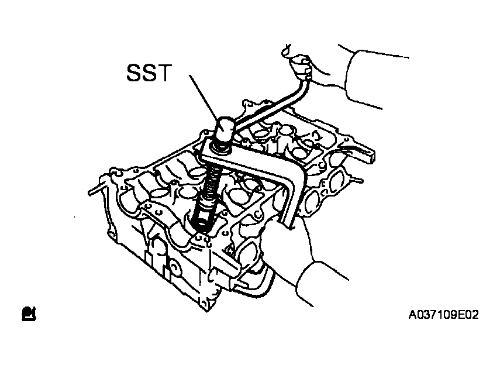

Cylinder Head, Intake Manifold, Exhaust Manifold: Disassembly
- REMOVE NO. 1 TAPER SCREW PLUG
- Using a 10 mm hexagon wrench, remove the taper screw plug and gasket.
- REMOVE VALVE LIFTER
HINT:
Keep the valve lifters in the correct order so they can be returned to the original locations when reassembling.
- REMOVE OIL CONTROL VALVE FILTER
- Using an 8 mm hexagon wrench, remove the taper screw plug.
- Remove the filter and gasket.
- REMOVE INTAKE VALVE
- Using SST, compress the valve spring and remove the 2 retainer locks, valve, retainer and valve spring.

Courtesy of © TOYOTA, LICENSE AGREEMENT TMS1002SST 09202-70020 (09202-00010)
HINT:
Keep the valves, valve springs and spring retainers in the correct order so they can be returned to the original locations when reassembling.
- Using SST, compress the valve spring and remove the 2 retainer locks, valve, retainer and valve spring.
- REMOVE EXHAUST VALVE
- Using SST, compress the valve spring and remove the 2 retainer locks, valve, retainer and valve spring.
SST 09202-70020 (09202-00010)
HINT:
Keep the valves, valve springs and spring retainers in the correct order so they can be returned to the original locations when reassembling.
- Using SST, compress the valve spring and remove the 2 retainer locks, valve, retainer and valve spring.
- REMOVE VALVE STEM OIL SEAL
- Using needle-nose pliers, remove the oil seal.
- REMOVE VALVE SPRING SEAT
- Using compressed air and a magnetic finger, remove the valve spring seat.
HINT:
Keep the valve seats in the correct order so they can be returned to the original locations when reassembling.
- Using compressed air and a magnetic finger, remove the valve spring seat.
- REMOVE UNION
- REMOVE STUD BOLT
- Using E5 and E7 "Torx" sockets, remove the 7 stud bolts.
- REMOVE CAMSHAFT BEARING CAP SETTING RING PIN